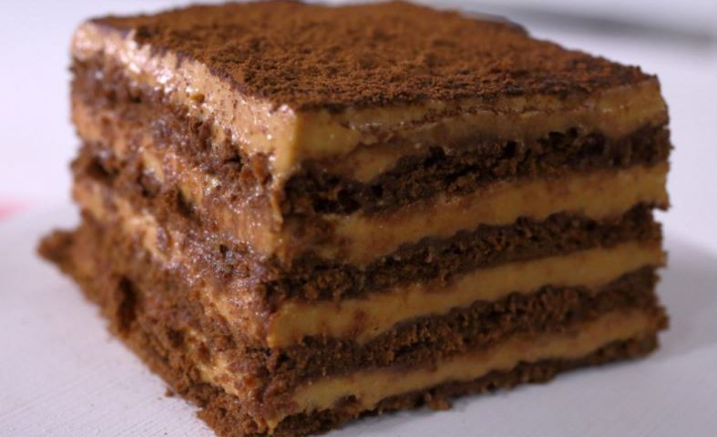

-
Tiramisu
-
Chocotorta
-
Más recetas


Ingredientes
- 1kg de galletitas cuadradas de chocolate
- 1kg de dulce de leche repostero
- 1kg de crema de leche (o queso crema para los que les gusta este ingrediente)
- café soluble (1 taza aprox.)
- 1 tableta de chocolate para rallar (opcional)
Preparación
- Mojar las galletitas en el café preparado e ir colocándolas una al lado de la otra en una fuente rectangular.
- Luego colocar una capa de la crema obtenida de la mezcla del dulce de leche repostero junto con la crema de leche o queso crema.
- Seguir los mismos pasos hasta terminar cubriendo el postre con el resto de la crema.
- Rallar chocolate y/o hacer pequeños rulos para decorar.
- Llevar a la heladera durante 1hr aprox., esto para que quede bien firme.